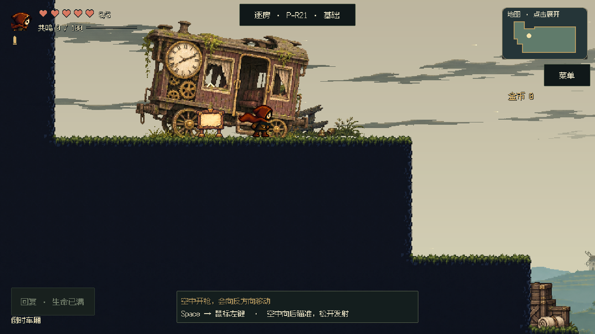

开场按移动、近枪拾取、射铃、首阶跳跃分步提示。按键提示收在P21空中反冲；P22—P24只做实践与复习，不再增加提示。三端按实际输入切换，画面使用正式角色与关卡。
视频使用明确的起始位置与模拟设备切换，拾枪、射铃和跳跃经过真实控制器；不冒充自然全流程或实体手柄测试。
安全平台上说明空中开枪会向反方向移动。实际反冲并安全落地后收起；地面开枪、普通跳跃和失败返回不算完成。动作中收起提示，暂停仍可查操作。

局部起点及设备切换为明确夹具，使用真实输入、反冲与正式镜头；短片不是连续通关。
暂停菜单→操作指引。默认当前设备，也可手动查阅三端；返回菜单保持暂停，继续才恢复游戏。按键读取实际映射，能力与技能随当前进度展示。


 来源和文件校验
来源和文件校验